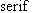
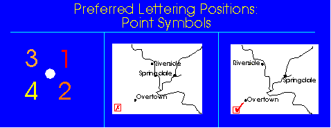
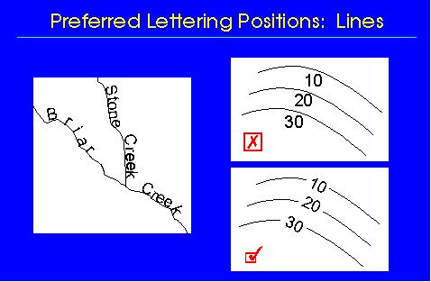
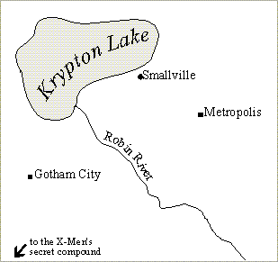

B. Form
Bertin's semiotic resources apply to text just as they do to points,
lines, and areas. However, with respect to text, some of these resources
are given special names. Font refers to the shape and pattern of letters.
Hundreds of fonts have been created since the invention of the printing
press and are available using automated systems. Fonts are often grouped
into several broad categories. A distinction is made between

and
fonts, as well as between Roman and Italic fonts. The weight
of text is classified as , ,
or .
fonts can be scanned more rapidly by most readers, although less information
seems to be retained than would be the case if the same text was displayed
with a
font. Italic fonts are used for the titles of books and journals and for
some proper names. Since it was impossible to print italic characters with
typewriters,
was used to indicate the placement of italic characters. It is no longer
necessary to employ this convention with automated systems capable of printing
italic characters. Traditionally the size of lettering was measured in
picas or point size. Increasingly, automated systems measure size using
conventional units such as inches and millimeters. The horizontal and vertical
distances between lettering are traditionally referred to as leading
, but increasingly today as inter-character and inter-line spacing.
Although automated systems offer a wealth of fonts and sizes, good practice
dictates that these resources be used sparingly. Too many fonts (and sizes)
can potentially confuse the reader. Traditionally, typographers try to
use no more than four fonts or font sizes on a given page of print. Apply
the same principle to your maps. Use different fonts and sizes only when
you have a compelling reason to do so.
Lettering is also distinguished by case: UPPER CASE, lower case, and
Mixed Case.
If you consider professionally produced maps, you find that font, size,
and case are used very carefully to encode text. In effect, the text is
used to group information into useful categories that reflect the theme
of the map.
Special attention must be paid to the orientation of text with respect
to the features being labeled. In this respect, text can be used as an
important cue to different map features.
Point features--lettering "points" to feature, but try to avoid
lettering across boundaries.

Linear features--lettering shows shape, but watch out for ambiguities.

Area features--lettering occupies the area.

In following these guidelines, conflicts will always emerge. On maps crowded
with information it is nearly impossible to arrange all text without striking
compromises among these principles. The point is to follow the guidelines
as much as possible and, when conflicts do arise, consider options carefully
in light of the map theme and competing cartographic elements.
The arrangement of letters can also be used to convey quite subtle distinctions.
For example, in the following map, lettering pertinent the map theme is
aligned with the map frame whereas lettering that describes the background
features is aligned with the graticule.
Quite apart from labeling features, text is used for convey other information
about the map--sources, date, methods of compilation, projection, and cartographer.
This ancillary information is usually placed in a subordinate position
within the frame of the map. However, the readability of your map will
be improved if you position this text in relation to the major map elements.
That is, your map can be composed with implicit margins and tabs that can
be used as a means of alignment for subsidiary text.
{kind=link}
{kind=link}
{kind=link}
{kind=link}
{kind=link}
{kind=link}
{kind=link}
{kind=link}